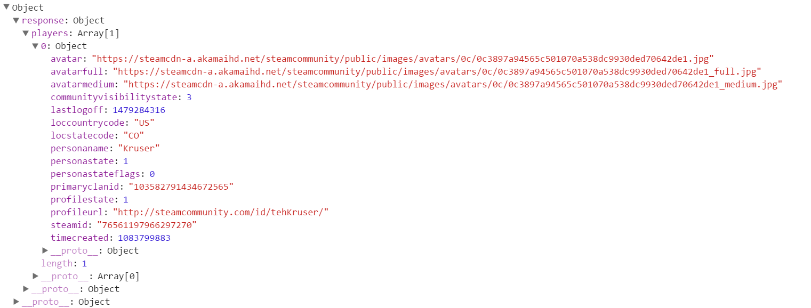
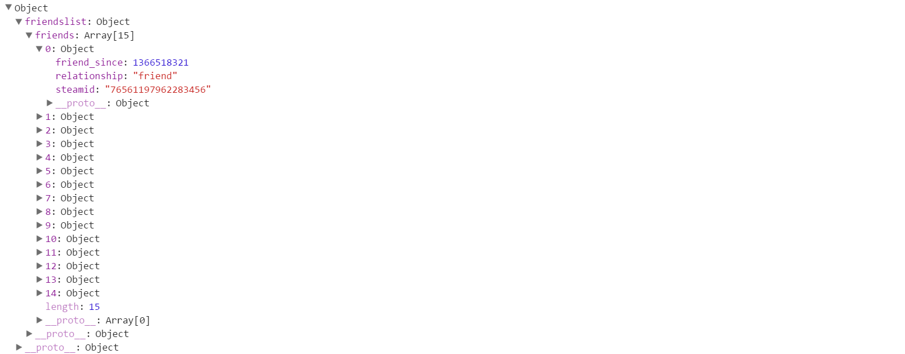
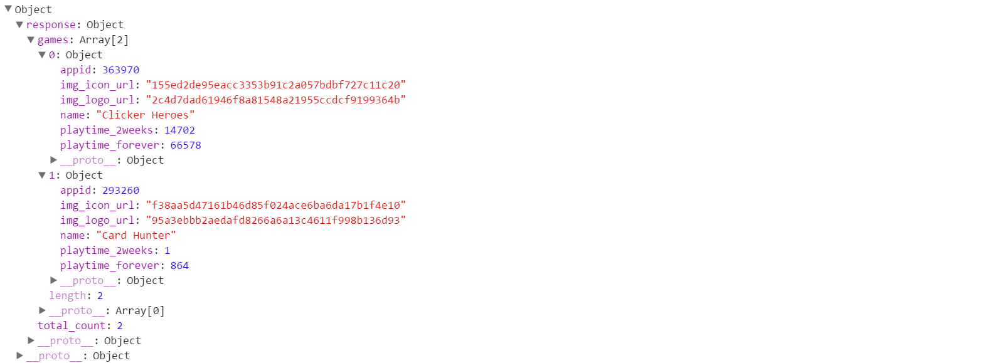

Now that we set up our server to handle 'GET' requests, we can work on the JavaScript for the client side. The first step is to visualize and plan for the information you want to work with and/or display. For this tutorial, we want to show information about an account by inputting the account's Steam ID.
Now that we know what we want, we can organize what type of data belongs with which Steam Web API method.
| Method: | GetPlayerSummaries | GetFriendList | GetRecentlyPlayedGames | ||
| Data: | Avatar | Gamer Tag | Status | Steam ID | Recent Games |
The last thing to do before we code is to write some pseudo-code to help sequence when we'll get the data and display it.
/****************************Pseudo Code for Our API calls**********************
*
* Get player summaries data for Steam ID.
* Display gamer tag, avatar, status
*
* Get friends list data for steam ID
* For each Steam ID in friend's list data
* Display Steam ID
*
* Get player summaries data for friend Steam ID
* Display gamer tag, avatar, status
*
* Get Recently played games for friend's Steam ID
* Display recently played games
********************************************************************************/
Now, we know what to display, where the information (data) comes from and an approach to coding. The last task to do before we code is to understand the format of the data and how to access the desired pieces.
As we stated in the pseudo code, the first data set that we will get from our proxy is the player summaries (GetPlayerSummaries from Steam Web API). If we were to log the response from our proxy to the console, we would get the following for Steam ID 76561197966297270:
var response = JSON.parse(req.responseText);The first node in our object is also called "response", so we access it by:
response.responseIts child node is an array called "players". There is only one element in the array, so we access it by:
response.response.players[0]
For the gamer tag, avatar and status values, we access them as:
| Data | JavaScript |
| Gamer Tag | response.response.players[0].personaname |
| Avatar (Medium) | response.response.players[0].avatarmedium |
| Status | response.response.players[0].personastate |
The information above should give you the general idea as to how to access the data from the proxy server. Here is the object for "friends list" and the JavaScript to access a Steam ID of a friend:
| Data | JavaScript |
| Friend Steam_ID | response.friendslist.friends[i].steamidwhere 0 ≤ i < length |
The last object we'll work with is for recent games:
| Data | JavaScript |
| Recent Game Name | response.response.games[i].namewhere 0 ≤ i < total_count |
Now that we are equipped with understanding what data we want, when we'll want to access it, and how to access it, we can get to coding!